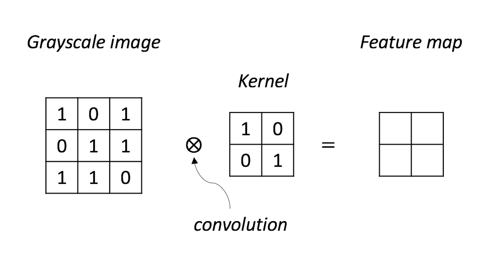

Exercises
 Figure 191: A NN model with its parameters
Complete the convolution operation as shown in Figure 191.
Use the
convolution()function in R packageOpenImageRto run the data in Q1.Let’s try applying the convolution operation on a real image. For example, use the following R code to get the image shown in Figure 192.
 Figure 192: Data for Q3
Figure 192: Data for Q3
library(EBImage)
readImage(system.file("images", "sample-color.png",
img <- readImage(system.file("images", "sample-color.png",
package="EBImage"))
grayimage<-channel(img,"gray")
display(grayimage)
Use the convolution() function in R package OpenImageR to filter this image. You can use the high-pass Laplacian filter, that would be defined in R as
kernel = matrix(1, nc=3, nr=3)
kernel[2,2] = -8- Figure 193 shows a NN model with its parameters. Use this NN model to predict on the data points shown in Table 61.
Figure 193: A NN model for Q4

Table 61: Test dataset for the NN model in Q4
| ID | \(x_1\) | \(x_2\) | \(y\) |
|---|---|---|---|
| \(1\) | \(0\) | \(1\) | |
| \(2\) | \(-1\) | \(2\) | |
| \(3\) | \(2\) | \(2\) |
- Use the
BostonHousingdataset from the R packagemlbenchand select the variablemedvas the outcome and all other numeric variables as predictors. Run the R pipeline for NN on it. Use \(10\)-fold cross-validation to evaluate a NN model with \(2\) hidden layers, while each layer has a number of nodes of your choice. Comment on the result.